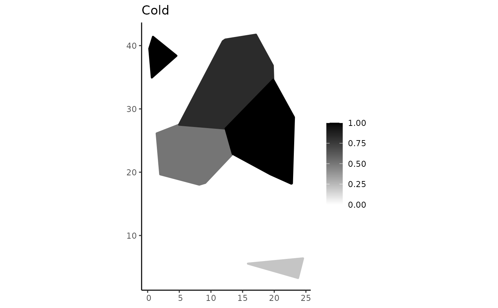
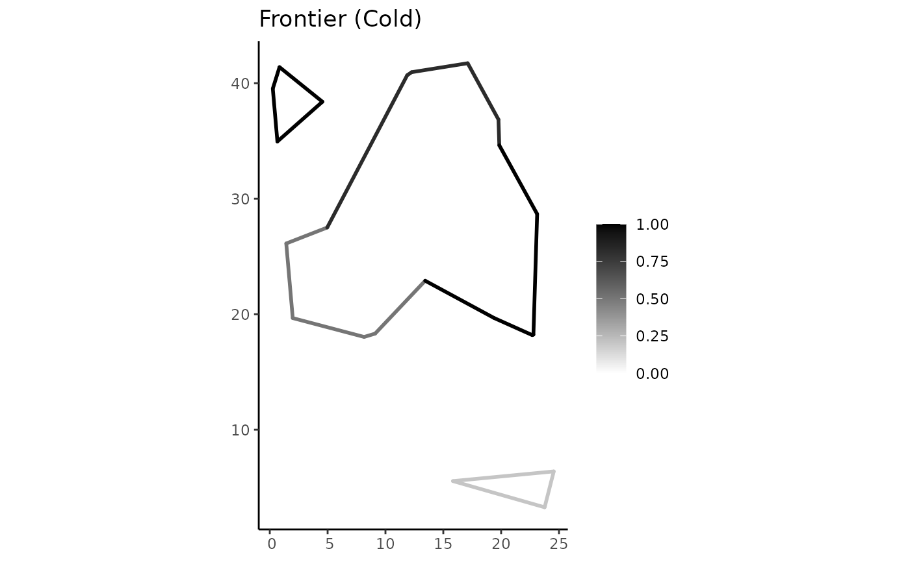
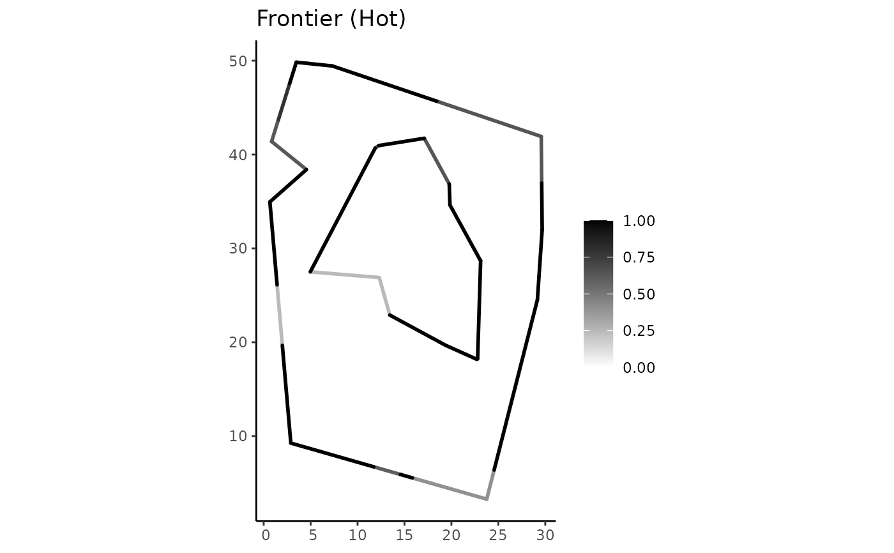

This function extracts the frontier (i.e., linear boundary) of a plateau region object by maintaining its membership degrees.
Arguments
- pregion
A
pgeometryobject of the typePLATEAUREGION. It throws an error if a different type is given.
Value
A pgeometry object of the type PLATEAULINE that represents the contour (i.e. frontier) of a plateau region object given as input.
Details
It employs the definition of fuzzy frontier of a fuzzy region object in the context of spatial plateau algebra (as defined in the references).
The fuzzy frontier of a fuzzy region object A collects all single points of A, preserving its membership degrees, that are not in the interior of its support.
IMPORTANT NOTE: Fuzzy frontier is different from fuzzy boundary (see spa_boundary_region).
Examples
library(tibble)
library(sf)
library(FuzzyR)
set.seed(123)
# some random points to create pgeometry objects by using the function spa_creator
tbl = tibble(x = runif(10, min= 0, max = 30),
y = runif(10, min = 0, max = 50),
z = runif(10, min = 0, max = 100))
classes <- c("category-1", "category-2")
mf1 <- genmf("trapmf", c(0, 5, 20, 35))
mf2 <- genmf("trimf", c(35, 80, 100))
#getting the convex hull on the points to clipping the construction of plateau region objects
pts <- st_as_sf(tbl, coords = c(1, 2))
ch <- st_convex_hull(do.call(c, st_geometry(pts)))
pregions <- spa_creator(tbl, classes = classes, mfs = c(mf1, mf2), base_poly = ch)
# capturing and showing the frontier of each pgeometry object previously created
frontier_pregion1 <- spa_contour(pregions$pgeometry[[1]])
frontier_pregion2 <- spa_contour(pregions$pgeometry[[2]])
plot(pregions$pgeometry[[1]])

plot(frontier_pregion1)
plot(pregions$pgeometry[[2]])

plot(frontier_pregion2)
